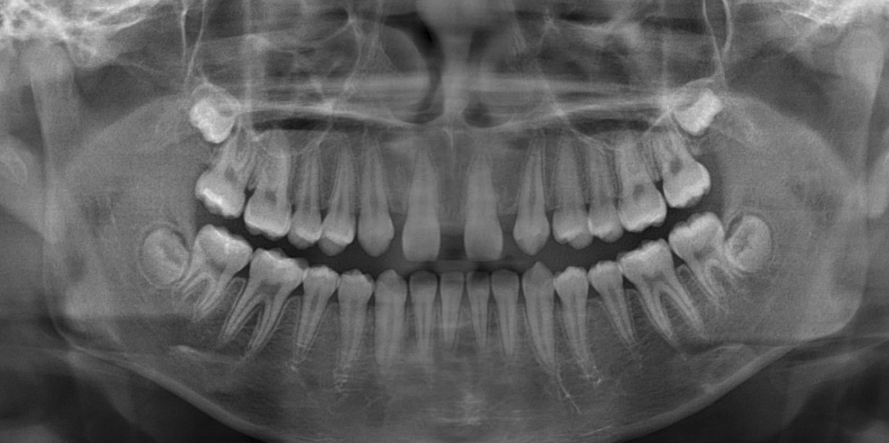
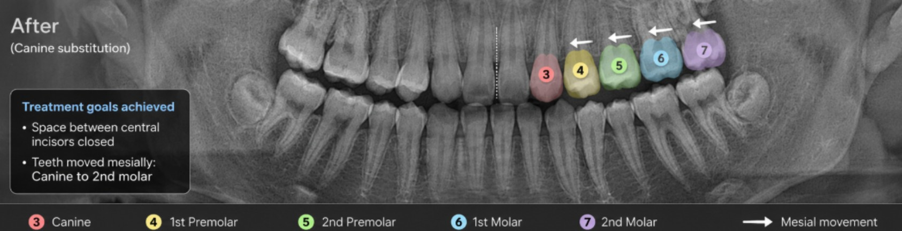
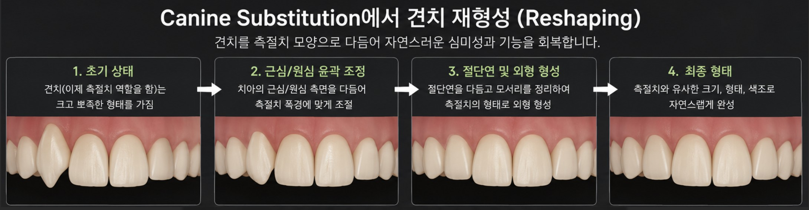
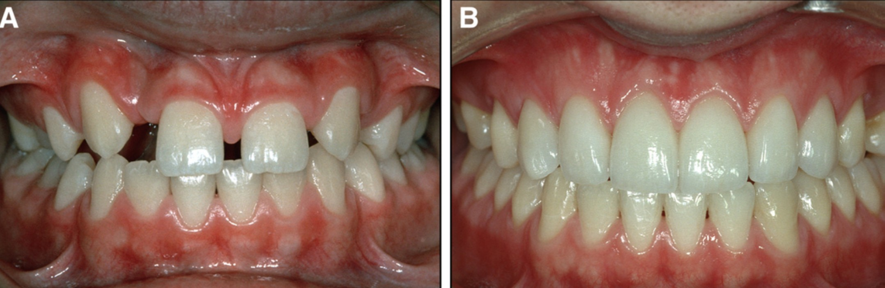

앞니가 없는 초등학생을 만났습니다 (측절치 결손, 송곳니 대치, 임플란트)
안녕하세요. 교정전문의 손창한입니다.
오늘은 선천적으로 앞니가 없는 경우 어떤 교정적 치료 방법이 있는지 이야기해보려고 합니다.

얼마 전, 초등학생 자녀의 손을 잡고 부모님께서 교정 상담을 오셨습니다.
"아이 앞니(측절치)가 선천적으로 없었고, 대문니(중절치) 사이가 크게 벌어져 있어요."
제가 봐도 웃을 때 티가 많이 날 정도로 앞니 사이 공간이 있었고, 아이도 꽤나 신경 쓰여하는 듯 했습니다 ㅠㅠ
다른 치과에서 상담을 받으셨을 때, 벌어진 앞니를 모으고 성인이 될 때까지 기다렸다가 임플란트를 하자고 한 상황이었구요.
제 첫번째 상담일기를 읽어보신 분은 아시겠지만 이런 상황에서 교정과는 크게 2가지 방향을 고민합니다.

어금니 발치 했을 때 임플란트 vs 교정 (How old are you?)
치아를 뺀다는 건 꽤 슬픈 일이다 — 몇 년 전 어떤 교수님께서 강의 중에 갑자...
1) 공간을 열어두고 나중에 임플란트로 채울 것인가? vs. 2) 교정으로 공간을 전부 닫을 것인가?
오늘은 그 중 두 번째 방법인 '송곳니 대치(canine substitution)'에 대해 간단히 이야기해보고자 합니다 :)
송곳니 대치(canine substitution)란 뭔가요?
말 그대로, 없는 측절치(2) 자리를 옆에 있는 송곳니(3)가 대신 차지하도록 교정적으로 치아를 당겨오는 방법입니다. 필요하면 작은 어금니(4)가 송곳니(3) 역할을 할 수 있도록 또 당겨와 전체적인 배열을 맞추게 됩니다. 또한 뾰족하고 큰 송곳니(3)를 측절치(2)로 대체하기 위해 송곳니의 모양을 측절치처럼 다듬는 과정이 선행됩니다.


임플란트는 뼈 성장이 완전히 끝난 후에야 식립할 수 있습니다. 보통 20세 이후 성인이 되어서 임플란트를 하게 되는데 그 사이 수년간 빈 공간에 대해 임시 보철이나 가철성 장치(틀니죠)를 써야 합니다.
문제는 무엇이냐?
우선 현실적으로 사춘기 아이에게 이게 꽤 부담스럽고 불편한 시간일거라는 겁니다.
뿐만 아니라 치과적 측면에서도 전치부 임플란트는 꽤나 어려운 치료입니다. 앞니 부위 임플란트 부위에서 장기적으로 보았을 때 잇몸이 내려앉거나 주변 뼈가 흡수되는 변화가 보고되기도 했고, 특히 20살과 같이 아주 어려서 한 임플란트는 주변 자연 치아들이 조금씩 맹출하는 것을 따라가지 못하기 때문에 시간이 흐를수록 주변 치아와의 높이 차이가 생기는 문제도 있을 수 있습니다.
즉, 웃을 때 잇몸이 많이 보이는 분이거나 아주 젊은 성인에게서 전치부 임플란트를 고려할 때는 장기적인 심미성을 담보하기가 꽤나 어렵다는 것입니다.
앞서 견치의 모양을 다듬어 측절치처럼 만드는 과정이 있다고 설명드렸는데, 정말 자연스럽고 티가 안날까요? 수백 명의 치과의사와 일반인을 대상으로 한 연구들을 종합해본 결과 전문가와 일반인 모두 견치 대치를 심미적으로 평가하였습니다.
| 저자 및 저널 (연도) | 대상 | 주요 결과 |
|---|---|---|
| Armbruster et al. World J Orthod (2005) |
교정과 전문의 / 일반치과의사 / 일반인 총 252명 | 일반인과 교정과 전문의 모두 canine substitution을 가장 매력적으로 평가. 임플란트 선호하는 치과의사도 "자신의 자녀라면 canine substitution 선택" 응답 |
| Schneider et al. AJODO (2016) |
교정과 전문의 87명 일반치과의사 100명 일반인 100명 |
임플란트의 심미성은 2005년 대비 향상. 치과의사는 canine substitution과 임플란트를 동등하게 평가. 일반인은 여전히 canine substitution 선호 |
| Cooper et al. 다기관연구 (2025) |
교정과 전문의 / 보철과 전문의 / 일반치과의사 / 일반인 총 547명 | Canine substitution 심미성 1위 |
즉 20년간의 연구를 종합해보면, 임플란트의 기술이 발전해도 견치 대치 치료의 심미성 평가는 일관되게 높게 유지되고 있습니다.
특히 일반인 눈에는 견치 대치 치료가 더 자연스럽게 보이는 경향이 꾸준히 나타나고 있습니다.
내 친구나 동료들이 보았을 때 티가 나지 않는 것 이상의 칭찬이 있을까요?
백문이 불여일견 — 아래 사진을 보면 측절치가 없는 환자의 견치 대치 전후 모습을 보여줍니다. 정말 감쪽같습니다.

참고 문헌: Zachrisson et al., AJODO, 2011
물론 모든 환자에서 임플란트가 아닌 견치 대치가 정답은 아닙니다. 치아의 크기, 골격적 패턴, 공간의 양, 환자의 나이 등에 따라 공간을 확보하여 임플란트(혹은 다른 보철) 치료하는 것이 더 적합한 경우도 있습니다.
그 중 오늘은 "학생 자녀를 가지신 분이라면" 이런 방법도 있다는 걸 소개하기 좋은 상담 케이스였던 것 같습니다 ^^
이 글을 읽는 모든 분들께서 모쪼록 좋은 치과의사 선생님을 만나 좋은 치료 받았으면 좋겠습니다 ㅎㅎ
이상 교정과의사 손창한이었습니다.